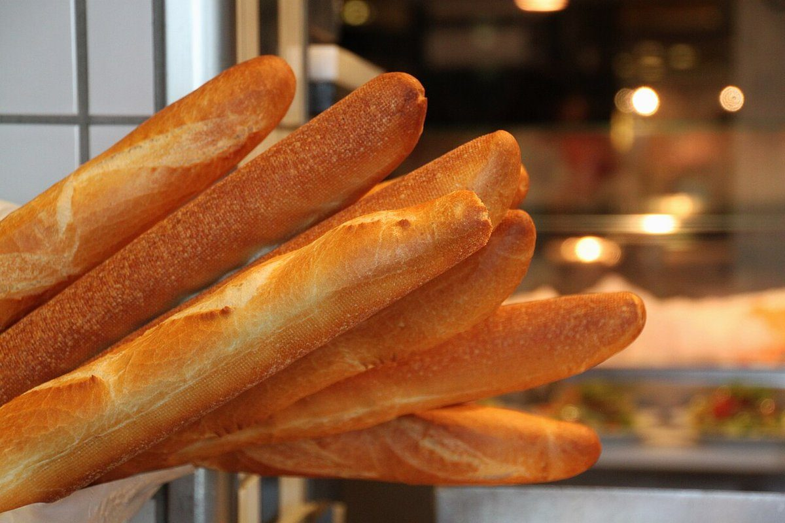

ベーカリー / 静岡県下田市
bakecafeniche
静岡県下田市白浜にあるベーカリー「BAKECAFE niche」のご案内ページです。営業時間やメニューなど、詳しいことは準備中。まずはInstagramをのぞいてみてください。

制作側の連想
「niche」から考えた、すみわけの話
お店の名前の由来は分かりません。制作側は「niche(ニッチ)」という言葉から、生き物がそれぞれ自分の居場所を見つけて暮らす「すみわけ」を連想しました。そこでこのページは、森の高さ別の4つの「層」に、パンのイメージ写真を住み分けさせる作りにしています。これは制作側の連想で、お店の理念・由来とは無関係です。
層1樹冠canopy
いちばん高いところの層。こんがり色づいたパンのイメージを並べました。


層2低木shrub
ひび割れた皮の層。切り口や割れ目のあるパンのイメージです。


層3地表ground
粉をまとった層。ふくらむ生地のイメージです。


層4根もとroots
細く、ねじれ、並ぶ形の層。長いパンや小さなパンのイメージです。



ご案内
お店のこと(確認できたものだけ)
| 所在地 | 〒415-0012 静岡県下田市白浜1692-1 |
|---|---|
| 電話 | 0558-36-3338 |
| 営業時間 | 準備中 |
| 定休日 | 準備中 |
| ご予約 | 準備中 |
| 駐車場 | 準備中 |
| SNS | Instagram @bakecafe_niche |